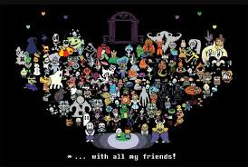

Los Protagonistas
Undertale presenta una galería de personajes únicos, cada uno con su personalidad, historia y motivaciones. Estos son algunos de los más destacados:
Frisk - El Determinado
Frisk es el humano que cae al Subsuelo y cuyo viaje seguimos a lo largo del juego. Aunque silencioso, sus acciones definen el destino de todos los monstruos.
Sans - El Guardián Bromista
Sans es posiblemente el personaje más icónico del juego. Aparentemente perezoso y bromista, esconde un profundo conocimiento sobre las líneas temporales y una determinación feroz para proteger a aquellos que le importan.
Toriel - La Madre Protectora
Ex reina del Subsuelo, Toriel actúa como guía y protectora en las Ruinas. Su naturaleza maternal y su trágica historia con Asgore la convierten en uno de los personajes más complejos.
Papyrus - El Optimista Incansable
Hermano de Sans y miembro de la Guardia Real, Papyrus es ingenuo, entusiasta y con un deseo genuino de hacer amigos. Su personalidad contrasta marcadamente con la de su hermano.
Undyne - La Guerrera Determinada
Líder de la Guardia Real, Undyne es feroz, valiente y extremadamente determinada. Su respeto por la fuerza y el coraje la convierten en un rival formidable y un aliado invaluable.
← Volver al Inicio